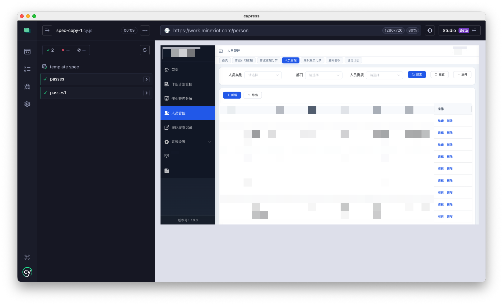
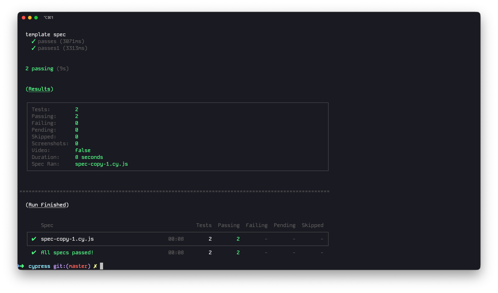

My Cypress E2E Test Setup That Actually Works
I’ve been using Cypress for end-to-end testing on a few projects now, and I keep coming back to the same patterns. This isn’t a comprehensive guide — it’s the subset I actually use, day to day.
Getting the thing installed
My project lives at ~/cypress. Two dependencies, that’s it:
npm install cypress --save-dev
npm install --save-dev typescript@5.6
TypeScript is there for editor support, not because I write tests in TS. The Cypress type definitions are genuinely useful when you’re writing .js specs in VS Code.
Launching tests
GUI mode is the default way in. Cypress ships with a browser-based test runner that shows you exactly what’s happening at each step — I still find it more useful than any headless log output.
npx cypress open

For CI or when I just want a quick check, headless mode:
# Run everything
npx cypress run
# Single file
npx cypress run --spec "e2e/uap-test/spec-copy-1.cy.js"
# Everything under a directory
npx cypress run --spec "e2e/uap-test/**/*"
That --spec flag is easy to forget about. I spent way too long running the entire suite before bothering to look it up.

The patterns I actually use
Cypress has a ton of features, but here’s what shows up in nearly every spec file I write.
-
Test skeleton
Three hooks.
beforeruns once before all tests (login, setup).beforeEachresets state between tests.itis the actual test.describe('Test suite', () => { before(() => { // login, set up stubs }) beforeEach(() => { // restore cookies, register intercepts }) it('does something', () => { /* ... */ }) it('does something else', () => { /* ... */ }) }) -
Intercepting API calls
cy.interceptdoes double duty: you can mock responses or just spy on real traffic. I mostly use it for spying.// Mock a response entirely cy.intercept('GET', '**/login/wechat/configInfo', { statusCode: 200, body: { appId: 'mock', timestamp: 0, nonceStr: '', signature: '' }, }).as('wechatConfig') // Spy on real requests — no mocking cy.intercept('POST', '**/login/login.action').as('login') cy.intercept('**/api/dailyPapers/page').as('dailyPapers')The
.as()alias is how you reference the intercept later. I’d argue it’s the single most important thing to get right. -
Waiting and asserting
Once you’ve aliased a request,
cy.waitblocks until it completes. Then you get the full request/response object to poke at.cy.wait('@login').then((interception) => { expect(interception.response.statusCode).to.be.oneOf([200, 303]) }) cy.wait('@dailyPapers', { timeout: 20000 }).then((interception) => { expect(interception.response.statusCode).to.eq(200) expect(interception.response.body.code).to.eq(200) expect(interception.response.body.data).to.exist })The timeout is optional. I set it to 20 seconds for slow APIs, but the default of 5 seconds works for most things.
-
Cookie juggling
A common scenario: you log in on one domain, then need to carry those cookies to another. I stash them in an array and replay them in
beforeEach.const preservedCookies = [] // After login, grab everything cy.getCookies().then((cookies) => { cookies.forEach((c) => preservedCookies.push({ name: c.name, value: c.value })) }) // In beforeEach, restore them preservedCookies.forEach((c) => { cy.setCookie(c.name, c.value, { domain: '.example.com', path: '/' }) })This is clunky, but it works. There are probably cleaner ways to handle cross-domain sessions, but I haven’t needed them yet.
-
The whole thing put together
Here’s what a real spec ends up looking like:
const preservedCookies = [] describe('Test suite', () => { before(() => { cy.intercept('GET', '**/login/wechat/configInfo', { statusCode: 200, body: { appId: 'mock', timestamp: 0, nonceStr: '', signature: '' }, }).as('wechatConfig') cy.intercept('POST', '**/login/login.action').as('login') cy.visit('https://login.example.com') cy.on('uncaught:exception', () => false) cy.get('input[name="userName"]').type('<username>') cy.get('input[name="password"]').type('<password>') cy.get('.login_btn').click({ force: true }) cy.wait('@login').then((interception) => { expect(interception.response.statusCode).to.be.oneOf([200, 303]) }) cy.getCookies().then((cookies) => { cookies.forEach((c) => preservedCookies.push({ name: c.name, value: c.value })) }) }) beforeEach(() => { cy.intercept('**/api/xxx/page').as('apiPage') preservedCookies.forEach((c) => { cy.setCookie(c.name, c.value, { domain: '.example.com', path: '/' }) }) }) it('loads page data', () => { cy.visit('https://app.example.com') cy.wait('@apiPage', { timeout: 20000 }).then((interception) => { expect(interception.response.statusCode).to.eq(200) expect(interception.response.body.code).to.eq(200) expect(interception.response.body.data).to.exist }) }) })That
cy.on('uncaught:exception', () => false)line is a hack. The app throws errors that aren’t relevant to the test, and I’d rather suppress them than have the spec fail for the wrong reason. Not proud of it, but it’s pragmatic.
Config
My cypress.config.js is minimal. No screenshots, no video — I’m not debugging CI failures from videos, I’m re-running locally.
const { defineConfig } = require('cypress')
module.exports = defineConfig({
numTestsKeptInMemory: 0,
screenshotOnRunFailure: false,
video: false,
e2e: {
viewportWidth: 1280,
viewportHeight: 720,
supportFile: 'support/e2e.js',
specPattern: 'e2e/**/*.cy.js',
},
})
Viewport size
The default viewport is 1000×660. Fine for most things, but if your app is responsive you’ll want to test at different sizes.
Set it globally in the config:
e2e: {
viewportWidth: 1280,
viewportHeight: 720,
}
Or dynamically inside a test:
cy.viewport(1280, 720)
cy.viewport('macbook-15') // 1440×900
cy.viewport('ipad-2') // 768×1024
cy.viewport('iphone-6') // 375×667
There’s a long list of presets: macbook-16, macbook-13, macbook-11, ipad-mini, iphone-xr, iphone-x, iphone-6+, iphone-se2, iphone-8, iphone-7, iphone-5, iphone-4, iphone-3, samsung-s10, samsung-note9. You can also pass an orientation: cy.viewport('ipad-2', 'portrait') or cy.viewport('iphone-4', 'landscape').
Project structure
.
├── cypress.config.js
├── support/
│ ├── e2e.js # auto-loaded config
│ └── commands.js # custom commands
├── fixtures/ # mock data
└── e2e/
└── uap-test/ # actual test specs
└── spec-copy-1.cy.js
That’s it. Nothing fancy, just the patterns I reach for every time I sit down to write a test.